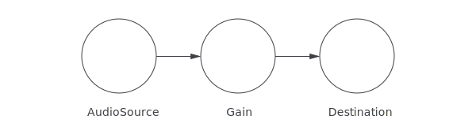

In 2004, I was given an iPod.
I count this as one of the most intuitive bits of technology I've ever owned. It wasn't because of the the snazzy (colour!) menus or circular touchpad. I loved how smoothly it fitted into my life. I could plug in my headphones, and listen to music while I was out and about. Then when I got home, I could plug it into my amplifier, and carry on listening there.
There was no faff. It didn't matter if I could find my favourite mix tape, or if my wifi was flakey - it was all just there.
Nowadays, when I'm trying to pair my phone with some bluetooth speakers, or can't find my usb-to-headphone jack, or can't access my music because I don't have cellular reception; I feel like I've taken a step back.
I think the Web Audio API feels kind of like how my iPod did.
The Web Audio API looks different from other browser APIs. Rather than throwing around data, or updating dom elements, you build a network of audio nodes, which the browser can use to generate/process/play sounds.
Let's take a look at it. First of all, we want to get some music to play. We can do this by creating an <audio> element.
<audio controls><source blah /></audio>
Song: Night Owl by Broke For Free
Great! This works but it's playing directly through the browser rather than through using any the Web Audio API.
We can plug this element into our audio graph by using an AudioSourceNode. This will capture the output from that element, and allow us to route it into whatever
This is cool, but it's playing directly through the browser; where we want to be able to control the audio through the Web Audio api. So the first thing we want to do is wire this into an audio graph.
We can do this by creating an AudioSourceNode - this wraps the output of the element, and allows us to feed the audio into a an audio graph.
input = audioCtx.createAudioSourceNode(document.querySelector('audio'))
input.connect(audioCtx.destination)
Cool. This looks & sounds exactly the same as before, though the difference is that it's running through the web audio api.
Now we can add some audio nodes to this graph and start doing some interesting stuff with it.
First, we'll plug in a gain node - this allows you to alter the volume of an an audio stream.
// <input type="number" min=0 max=1 step=0.01 id="volume" />
gain = audioCtx.createGain()
volume.value = gain.gain.value
volume.oninput = () => gain.gain.value = parseFloat(volume.value)
input.connect(gain)
gain.connect(audioCtx.destination)
You'll be able to see now that you can change the value of the input field, and the amplitude of the audio changes.
You can now hook this to any kind of interface that you want.
https://uxdesign.cc/the-worst-volume-control-ui-in-the-world-60713dc86950
So, now - our graph looks like this:

An interesting node that we can use as an Analyser Node, this allows us to inspect the audio data that is flowing through our graph.
We can add an analyser node in the same way as we did the gain node, and it won't make any difference to the audio that god through it.
analyser = audioCtx.createAnalyser
input.connect(analyser)
analyser.connect(gain)
gain.connect(audioCtx.destination)
Now, from elsewhere in our code, we can request data from the analyser node, and we'll get back an array that we can display in any way that we want.
const waveform = new Uint8Array(analyser.fftSize)
const frequencies = new Uint8Array(analyser.frequencyBinCount)
const loop = () => {
requestAnimationFrame(loop)
analyser.getByteTimeDomainData(waveform)
analyser.getByteFrequencyData(frequencies)
// draw anything we want
}
loop()
The nice thing about this is that we're not tied to any functionality of the audio stream - it's completely up to us when we query the analyser node, and we could feed it into anything we want.
For example, if we wanted to draw this data to a canvas, we could do it with the following code:
ctx.beginPath()
waveform.forEach((f, i) => ctx.lineTo(i, f))
ctx.stroke()
ctx.beginPath()
frequencies.forEach((f, i) => ctx.lineTo(i, 255-f))
ctx.stroke()
[[audio, input, canvas]]
The two lines you can see here are:
What's nice about this, is that you can plug it into whatever you want. It could be a canvas, or webgl attributes, or updating elements, or even setting css variables.
So far we've used an
There's a few ways to do this, though the one we're going to look at is an AudioBufferNode.
This allows you to generate an array of samples (value at each timestamp), which you can then wrap up and play in exactly the same way we did the
This can get a bit boring, so we'll use a helper method that will let us easily generate a sound:
const generator = (audioCtx, target) => (seconds, fn) => {
const { sampleRate } = audioCtx
const buffer = audioCtx.createBuffer(
1, sampleRate * seconds, sampleRate
)
const data = buffer.getChannelData(0)
for (var i = 0; i < data.length; i++) {
data[i] = fn(i / sampleRate, seconds)
}
return () => {
const source = audioCtx.createBufferSource()
source.buffer = audioBuffer
source.connect(target || audioCtx.destination)
source.start()
}
}
const sound = generator(audioCtx)
Now we can write a function, that takes time, and maps it to a sample which we can then play through our browser. For example, the following will generate 0.5 seconds of white noise at 20% volume (because, um, noise is a bit… noisy?).
const noise = sound(0.5, t => Math.random() * 0.2)
Now, when we click that button, we'll hear a random noise from our speaker. Very handy!
Our audio graph has changed a bit, rather than being static, every time we press a button, a new node is being created & added, and being played through the speakers.
/ [buffer] (source) => (analyser) => (gain) => (output)
The cool thing about this is that we can use this to generate all sorts of sounds and effects as mathematical functions.
For instance, we can build simple oscillator sounds:
// Math.sin with period of 0..1
const sin = v => Math.sin(Math.PI * 2 * v)
const _440hz = sound(0.5, t => sin(t * 440))
const _880hz = sound(0.5, t => sin(t * 880))
Since we're now expressing sounds as simple functions, we can start introducing higher order logic to implement new sounds & effects.
For instance, if we want to have a richer, more harmonic, sound we can write a higher order function that combines multiple frequencies together:
const harmony = f => [4, 3, 2, 1].reduce(
(v, h, i) => (sin(f * h) * (i+1) ) + v
)
const a440 = sound(0.5, harmony(440))
And because we're not using any audio-specific functionality here, we can repurpose anything that does an operation on data.
For instance, we can implement an ADSR envelope (which will make our note sound more like it's been pressed with a keyboard) with d3.
const adsr = d3.scale()
const a440 = sound(0.5, (t, s) =>
harmony(440)(t) * adsr(s)
)
… Go and experiment yourself
https://jsbin.com/tawenuh/edit?js,output
What we've implemented with our manual function can actually be represented in a series of native audio nodes.
(oscillator) -> (gain) -> (destination)
Which will totally be more performant (because it's not happening on the main thread), and more flexible in some ways (because you can set timings dynamically whilst the note is playing).
But we're going to stay with this approach because it's fun, and sometimes the fun thing to do might not technically be the best.
Having a button that makes a sound is totally great, but how about lots of buttons that make lots of sounds? Yup, totally way-greater-er.
Because I'm pretty terrible at CSS, I've drawn an SVG image of a keyboard below:
We can map the elements of this image, to different notes that we've generated. All we have to do is work out what frequency each of the notes should be.
I thought this would be hard because pianos were invented more than 250 years before the Hz unit was even defined, so surely there wouldn't be a simple mapping between the two?
const freq = note => 27.5 * Math.pow(2, (note - 21) / 12)
This equation blows my mind. It takes a midi note (each key on the keyboard is numbered), and returns the frequency of that note.
So now, we're able to hook up our SVG to the audio that we've created:
Array.from(svg.querySelector('rect'))
.sort((a, b) => a.cx - b.cx)
.forEach((key, i) =>
key.addEventListener('touchstart',
sound(0.5, (t, s) => adsr(s) * sin(freq(i) * t)
)
)
And, voilà. Our keyboard works:
[working keyboard]
Something that's kind of fun about this is that we can apply our code to any SVG at all and make a keyboard out of it.
[
As I mentioned before, some of this could be implemented more performantly with WebAudio nodes, or even better - you let something like Tone.js or Howler.js be performant for you.
There's also some new challenges with immersive WebXR experiences, where spatial audio becomes really important. https://googlechrome.github.io/omnitone/#home
And that's about it.
If anyone ever asks you "could you turn this SVG into a musical instrument" you don't have to stare blankly at them anymore.
If you're interested in the web audio api, there's heaps of information on MDN. There's also some interesting features coming up in the future (AudioWorklets look pretty cool).
https://webaudio.github.io/web-audio-api/#AudioWorklet
Howler.js
Ben Foxall is a JavaScript Engineer and Adventurist. After 16 years of avoiding the subject; he'd like to tell Jamie that he probably did lose that mix-tape - he's sorry about, but also, he's not sure it was as good as Jamie made out. Oh and also, Chris, sorry for breaking your phone, and that I still laugh every time I think about it.